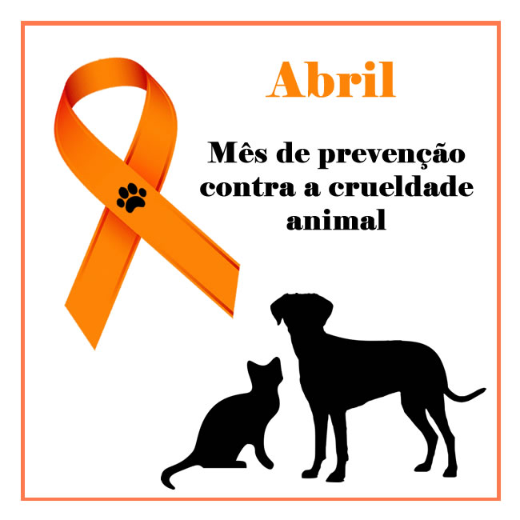

🐾 ABRIL LARANJA 🧡Mês de conscientização contra os maus-tratos aos animais |
|
| 🏠 Início | 📄 Campanhas | 🐶 ONGs | ⚖️ Leis | 👤 Sobre | |
Links úteis |
 O que é o Abril Laranja?O Abril Laranja é uma campanha de conscientização que acontece durante o mês de abril, com o objetivo de alertar a sociedade sobre os maus-tratos contra os animais. A campanha incentiva o respeito, o cuidado e a proteção de todos os seres vivos. Você sabia?
MensagemOs animais sentem dor e precisam de proteção. Respeitar a vida animal é dever de todos. |